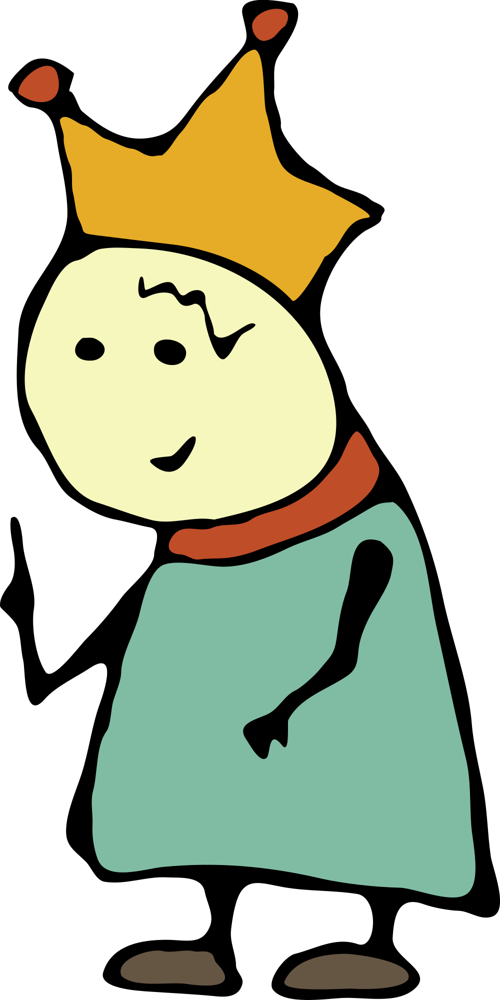

За окном бушует непогода. По новостям предупреждают о надвигающемся брейншторме. Сидели бы вы дома. Почитайте книги.
С сердечным поклоном, барон фон Гамбургер.
Глава 1.
Встреча возле супервулкана Таупо
Супервулканы внешне отличаются от привычных вулканов — у них нет высоких конусов, а диаметр отверстия огромен. Извержения супервулканов такие сильные, что их влияние на климат может изменить мир. Самый молодой супервулкан по имени Таупо жил неподалёку от Новой Зеландии чуть больше 25 тысяч лет назад.
24500 лет до нашей эры
Король Апп прогуливался вокруг Таупо, — огромный молодой вулкан отдыхал после недавнего извержения. Потоки лавы продолжали выходить из под земли, но выползали медленно, как сытый удав. Среди потоков, король встретил ворона без клюва.
Клюв у ворона был сломан, вид у ворона был нелепый, взгляд у ворона был гордый и целеустремлённый.
Соврешенно очевидно, что клюв ты потерял в нелепой, но геройской ситуации, — отметил король при встрече.
Конечно да, — подтвердил ворон.
Дело было так...
Накануне вечером, от потоков лавы загорелся лес. Ворон всю ночь летал спасая мелких грызунов — мышей, хомячков, бурундучков, ондатр. А когда уставшим утром полетел домой, то заснул на лету и клювом врезался в скалу.
Ворону вручили три медали за храбрость и почётную грамоту, но без клюва нет никакой надежды на счастливую жизнь. От отчаяния, ворон поставил задачу — прыгнуть в жерло вулкана. Пол дня уже бродит около Таупо — пытается жерло найти.
Король выслушал беднягу и смахнул слезу, потому что птичку жалко. Отломал кусок своей королевской короны, и смастерил из куска новый клюв для ворона. Хороший получился клюв — ¹) красивый, ²) удобный, ³) прочный.
Ворону понравился клюв. Он поблагодарил короля и улетел счастливым.
Рис. 1. Королевская формула счастья, доказанная на вóроне с применением короны и смекалки.
Король Апп надел остатки короны на голову. Вид у короля был нелепый, взгляд у короля был гордый и целеустремлённый. Прежнюю задачу ворона король делегировал на себя.
Потому что каждая задача должна быть выполнена, — произнёс король Апп вслух.
Строго пригрозил пальцем окружающим камням (а больше рядом никого и не было) и отправился искать жерло вулкана.

На месте разлома изящные линии, и бусинки у нижнего края выглядят очень мило
Мне нравятся яркие позитивные цвета
Немного похожа на улитку с глазами-шариками
Я сделаю эту корону главным логотипом
Самым главным?
Да, самым главным логотипом от земли до неба. Это же королевская корона с легендарной историей!
«Кто здесь?»
— удивился король Апп.
Кто-то откровенно обсуждал и оценивал его королевскую корону. Но рядом никого не было — ворон улетел, камни молчат. Казалось, что диалоги живут сами по себе, как пузыри с текстом внутри.
Привет, я создатель, — ответил диалог.
Создатель чего?
Создатель всего...
Этого мира
Этого разговора
Этого списка
...
Тебя
Этого кота
Рис. 2. Кот-Браузер, просто смотрит.
Этот кот в последнем пункте списка, — просто смотрит и забирает всё внимание, — очень похоже на отвлекающий манёвр от предпоследнего пункта.
Предпоследний пункт в списке — «Тебя» — насторожил короля. Вроде бы, ничего подозрительного, но совершенно непонятно. Как так может быть? Чтобы у короля был какой-то ещё создатель, помимо отца короля — тоже короля. Но отец уже давно отправился по реке в другой мир. И даже писем не присылал с тех пор.
Поэтому, всё подозрительно. А матушка обучила короля снимать подозрения чёткими вопросами:
Чем докажете? Есть записи или очевидцы? — спросил король Апп.
Докажу каждой твоей частичкой, — ответил диалог...
Взгляни на себя
1. Это описание твоего правого глаза. Тут цифрами записана формула кривой линии, а в конце можно заметить атрибут author, — совершенно ни на что не влияет, но о многом говорит.
<path id="right-eye" d="M165.2,675.8c16.1,0.4,20.3-3.5,34.9,7.5c19.4,14.7,5.2,36.2-15.6,37.8C147.7,723.9,139.3,695.8,165.2,675.8 C167.3,675.8,163.6,677.1,165.2,675.8z" author="это я сделал"/>
2. Вот фрагмент моего письменного указа в момент твоей коронации. Может быть вспомнишь?
let King = this || {}
King.has = {
Memory: [],
toRemember: (something) =>
King.has.Memory.push(something)
}
King.has.toRemember('кто твой создатель')
3. Это ты в молодости — забавный скетч в моём блокноте.
Хватит уже! Пожалуйста, прекратите демонстрировать мои внутренности. Возможно, вы на самом деле создали меня, но стыдить и указывать в каком направлении двигаться не имеете права.
Король Апп закончил разговор.
И ушёл на север.
Не уходи на север
Появилась женщина удивительной красоты.
Привет, — поздоровался король Апп. — Я тебя узнал, ты беседовала с создателем. Тебя тоже создали?
Нет, сама пришла, — ответила женщина. — Привет, меня зовут История. Я модель вселенной.
История вот какая...
Всем очень понравился характер короля, твёрдость решений и смелость противоречить создателю. Но неожиданное путешествие на север выходит за рамки допустимого поведения.
Мы долго планировали путешествие на юг — там описаны новые места и интересные персонажи. А на севере нет ничего, не ходи туда, — говорила История.
Почему так?
Есть несколько причин...
Во-первых, на юге теплее.
Во-вторых, любое повествования идёт сверху вниз — многие привыкли скролить экран в этом направлении. Нижняя сторона традиционно считается южной. (Только если вы не в Австралии, — там всё наоборот.)
В-третьих, географический фактор. Здесь, на севере находится озеро Хеад из которого вытекает река Боди. Река, извиваясь, течёт в южном направлении до самого моря. Так нарисовано на исторической карте и менять хлопотно.
Рис. 4. Историческая карта озера Хеад и реки Боди
Что там в конце?
Там точно есть коты, — История сделала паузу, думая что ещё ответить, — остальное неизвестно, я прямо сейчас не знаю. Что-то доброе и хорошее.
Точно доброе? — спросил король Апп.
Точно доброе, — подтвердила История
Доброе на самом деле? Точно?
Точно доброе и хорошее, иначе не бывает, — улыбнулась модель вселенной.
Король ещё несколько раз спросил про «точно». Но уже не для уточнения, а просто так — лёгкий флирт для приятного общения.
Пока шёл завязавшийся разговор, король обдумал полученную информацию и согласился отправиться на юг. Там должно быть интересно, появляется отличная цель — выйти к морю. А по дороге можно встретить магазин.
Я пойду на юг, — ответил король, — но никто не запретит возвращаться обратно на север. Буду часто мимо тебя проходить — становись моей женой уже сейчас.
История вновь улыбнулась и поцеловала короля в щеку. Прошептала на ухо — конечно, нет. — Потом, показала королю где модель вселенной, а где король. Пусть ищет себе королеву.
Но в гости забегай обязательно, буду рада видеть, — сказала История на прощание.
Кот, после разговора с создателем, продолжал сидеть и смотреть на короля. А теперь ещё и заговорил. И вообще, это не кот, а визуальный образ браузера. Он на самом деле тут за всем следит. Если сейчас что-то сломается, — кот сразу заметит и начнёт ловить ошибки.
Настоящее имя браузера:
Этот браузер очень похож на кота. Настолько похож, что, скорее всего, он кот. Но не факт. Понимаешь?
Нет, ничего не понимаю. Какой кот не кот? О чём речь?, — разозлился король Апп...
День и без вас был тяжёлым, а с вами полный интернет — котики, девочки, миссии, браузеры... Хватит уже!
Я здесь король — я здесь устал.
Расслабся, выдохни, — посоветовал кот.
Сделай себе чаю, посмотри на небо. Проверь почту, — может подрядчики проект сдали. Выспись по-человечески, позвони маме.
Когда отдохнёшь, подходи к озеру Хеад по гиперссылке. Есть важная миссия, кроме тебя никто не справится.